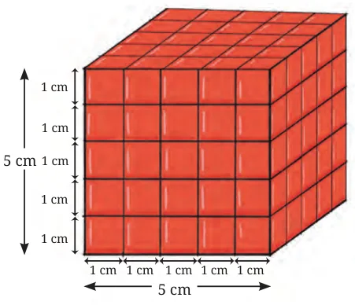

- 1.The volume of a cube is \(64\ \text{cm}^{3}\). What is its total surface area?
- 2.How many small cubes with side 20 cm can be packed tight in a cubical box with side 2 m?
- 3.The dimensions of a godown are \(40\ \text{m} \times 25\ \text{m} \times 10\ \text{m}\). If it is filled with cuboidal boxes, each of dimensions \(2\ \text{m} \times 1.25\ \text{m} \times 1\ \text{m}\), then find the number of boxes.
- 4.Two cubes each of volume \(125\ \text{cm}^{3}\) are joined end to end. Find the surface area of the resulting cuboid.
- 5.A cube of side 4 cm is cut into cubes of side 1 cm. What is the ratio of the surface areas of the original cube and all the cut-out cubes? (Note that there is no change in volume but a big change in the surface area. This property has major consequences in the biological world.)
- 6.The surface areas of the three faces of a cuboid that meet at one of the corners of the cuboid are \(6\ \text{cm}^{2}\), \(15\ \text{cm}^{2}\), and \(10\ \text{cm}^{2}\) respectively. What is the volume of the cuboid?
- *7.A cube of side 5 cm is painted on all its faces. If it is sliced into \(1\ \text{cm}^{3}\) cubes, how many of these \(1\ \text{cm}^{3}\) cubes have

- (i)exactly three faces painted?
- (ii)exactly two faces painted?
- (iii)exactly one face painted?
- (iv)no face painted?
- *8.Find a cuboid with edges whose lengths are integers (in cm), given that it has a total surface area of exactly \(100\ \text{cm}^{2}\).
- (i)Is there more than one such cuboid?
- (ii)Can you find them all?
- (iii)Show that you have found them all.
Think and Reflect
Suppose a swimming pool is being built in your school. Two choices are available for the dimensions of the pool: (A) 8 ft (depth) \(\times\) 50 ft \(\times\) 20 ft and (B) 6 ft (depth) \(\times\) 100 ft \(\times\) 15 ft. Which option would be suitable/appropriate for your school? Why? What parameters/aspects did you consider to make the choice? [1 cubic foot \(\approx\) 28.3 litres]